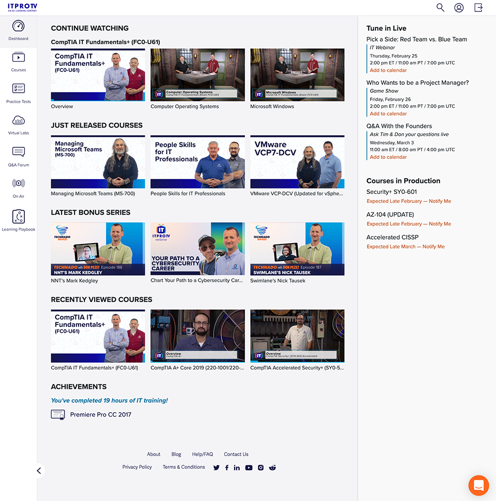
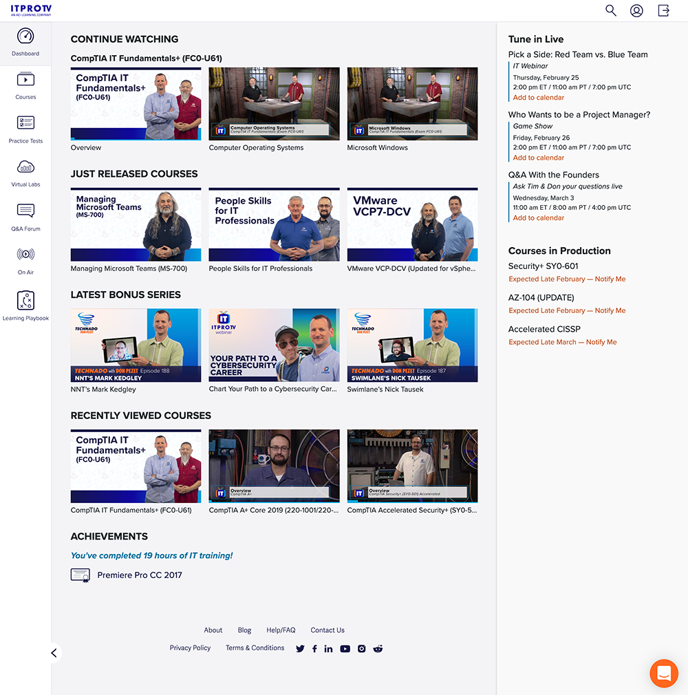

Dashboard Design
My Role
UX Designer/Developer designing and developing designing a logged-in member dashboard experience from conception to delivery.
Project Goal
To create a new logged-in user experience landing page with the purpose of creating value through realizing accomplishments, finding new content, and resuming current activities quickly. The goal is to keep customer satisfaction high, ultimately leading to customer retention.
Target Audience
Users who have a personal subscription or users who have a company-paid subscription.
Challenge
As a new product offering, the challenge was how to visually represent video selections based on their progress and new content released as well as deciding the elements to highlight in the side navigation bar.
Research Study Details
A group of users who have been long-time members were asked what features they would find beneficial in their training process. Overwhelmingly, the most requested item was the ability to resume a course without having to navigate through multiple steps. Users also requested the ability to view course completions in one centralized location. It was also important to reiterate the company's value of 'creating content daily' by showcasing a dedicated section of new content front and center
 
